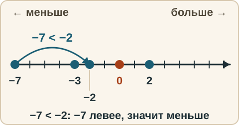
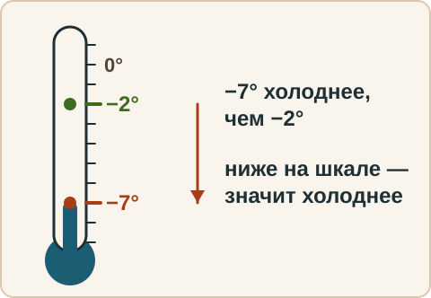
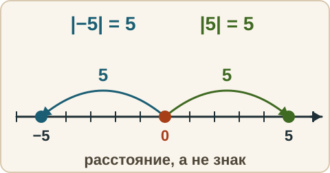
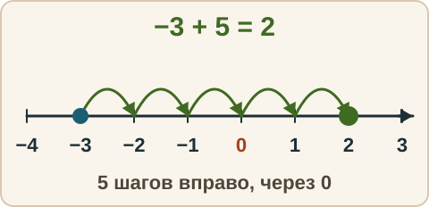
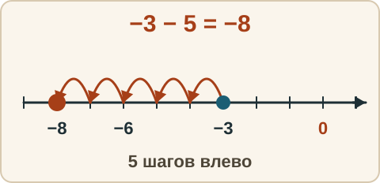
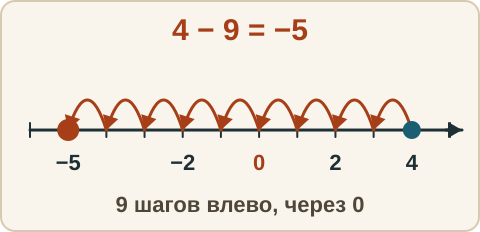
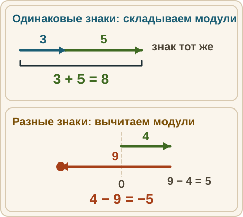
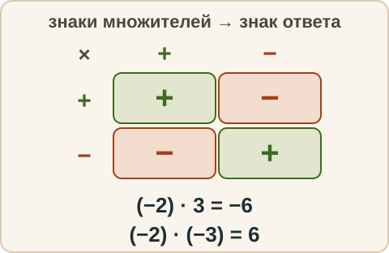
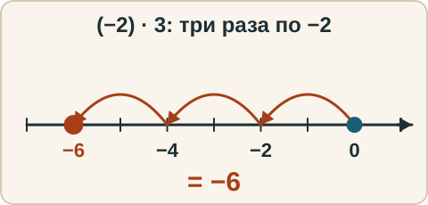

Математика: база · занятие 3Отрицательные числа и числовая прямая
Цель: ты ставишь числа на прямую, сравниваешь, складываешь и вычитаешь с отрицательными, знаешь правило знаков при умножении. Это выход на задание 7 ОГЭ («какое число отмечено на прямой», «какое из чисел больше»). Ответы и подсказки спрятаны: сначала реши сам, потом нажми кнопку.
Вспомнить
- 7 · 8
- 56 : 7
- 2 + 3 · 4
- 48 · 11
- 93 : 3
- 100 − 36 : 6 · 2
Беглость
Таблица: сначала примеры, помеченные в твоём журнале, потом эти:
- 6 · 8
- 9 · 6
- 7 · 9
- 64 : 8
- 49 : 7
- 36 : 6
Затем «сосед»: для каждого числа назови число на 1 меньше и на 1 больше.
- 100
- 0
- −1
- −10
- 999
Правило
Числовая прямая. Прямая со стрелкой вправо, на ней точка 0 и единичный отрезок. Правее нуля — положительные числа, левее — отрицательные. Чем правее точка, тем число больше. Поэтому −3 < 2 и −7 < −2: минус семь левее минус двух.

Из жизни. Температура: −7° холоднее, чем −2°. Долг: «у меня −500 рублей» хуже, чем «−100».

Модуль числа — расстояние от нуля до числа на прямой. Пишут |−5| = 5, |5| = 5. Расстояние не бывает отрицательным, поэтому модуль всегда ≥ 0. Знак сам по себе ничего не говорит о «размере» — говорит, в какую сторону от нуля.

Сложение и вычитание — как шаги по прямой. Прибавить — шаг вправо, вычесть — шаг влево.
Когда шагать долго, правило: если знаки одинаковые — модули складываем, знак оставляем (−3 − 5 = −8). Если знаки разные — из большего модуля вычитаем меньший, знак берём у того, чей модуль больше (4 − 9: 9 − 4 = 5, у 9 минус, ответ −5).




Умножение: правило знаков. Плюс на минус — минус; минус на минус — плюс.
- (−2) · 3 = −6 (три раза по −2: −2, −4, −6).
- (−2) · (−3) = 6.
- Для деления то же самое: −12 : 4 = −3; −12 : (−4) = 3.


Разобранный пример
Ниже у каждого примера — числовая прямая. Меняй число, действие и количество шагов и смотри, куда придёшь.
−3 + 5. Стою на −3, делаю 5 шагов вправо: −2, −1, 0, 1, 2. Ответ 2.
−3 − 5. Стою на −3, 5 шагов влево: −4, −5, −6, −7, −8. Ответ −8.
4 − 9. Стою на 4, 9 шагов влево: 3, 2, 1, 0, −1, −2, −3, −4, −5. Ответ −5.
С подсказкой
Решай сам. Подсказки открывай по одной, только если застрял.
- −6 + 10 − 7
Сам
- −8 + 3
- −8 − 3
- 5 − 12
- (−4) · 5
- (−4) · (−5)
- Какое число больше: −15 или −3?
Ловушка
Ловушка. −8 − 3 — это не −8 + 3. Минус перед числом говорит «шаг влево», и шаги влево от отрицательного числа уводят ещё дальше от нуля. Проверь себя: нарисуй прямую, если сомневаешься — это не стыдно, это инструмент.
Смесь
10 заданий — срез всей недели.
- −5 + 2
- 36 : 4 · 2
- 32 · 12
- (−3) · (−6)
- 7 − 10
- (9 + 6) : 5
- |−12|
- −2 − 9
- Что больше: −1 или −100?
- 150 : 7 — с остатком
Журнал
Запиши 1–3 строки: «что перепутал → как проверить». Дополни строкой «Смесь: верно N из 10» — это итог недели.
- …